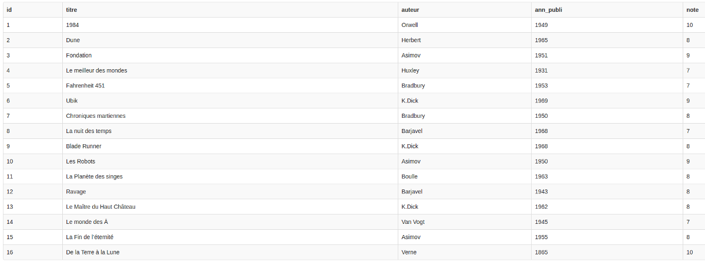

Nous allons apprendre à effectuer des requêtes sur la base de données que nous avons créée dans l'activité précédente.
Dans la fenêtre de droite de sqlfiddle, saisissez la requête sql suivante :
SELECT id, titre, auteur, ann_publi, note
FROM meslivres
puis appuyez sur la touche "Run SQL"
Après un temps plus ou moins long, vous devriez voir s'afficher ceci :
Comme vous pouvez le constater, notre requête sql a permis d'afficher tous les livres. Nous avons ici 2 mots clés du langage sql SELECT qui permet de sélectionner les champs qui devront être "affichés" (je mets "affichés" entre guillemets, car le but d'une requête sql n'est pas forcément d'afficher les données) et FROM qui indique la table qui doit être utilisée.
Il est évidemment possible d'afficher seulement certains champs (ou même un seul) :
Dans la fenêtre de droite de sqlfiddle, saisissez la requête sql suivante :
SELECT titre, auteur
FROM meslivres
Vérifiez que vous obtenez bien uniquement les titres et les auteurs des livres
Écrire et tester une requête permettant d'obtenir uniquement les titres des livres.
N.B. Si vous désirez sélectionner tous les champs, vous pouvez écrire :
SELECT *
FROM meslivres
à la place de :
SELECT id, titre, auteur, ann_publi, note
FROM meslivres
Pour l'instant nos requêtes affichent tous les livres, il est possible d'utiliser la commande WHERE afin d'imposer une (ou des) condition(s) permettant de sélectionner uniquement certaines entrées (livres).
La condition doit suivre le mot-clé WHERE :
Saisissez et testez la requête sql suivante :
SELECT titre, ann_publi
FROM meslivres
WHERE auteur='Asimov'
Vérifiez que vous obtenez bien uniquement les livres écrient par Isaac Asimov.
Ecrire et tester une requête permettant d'obtenir uniquement les titres des livres écrits par Philip K.Dick.
Il est possible de combiner les conditions à l'aide d'un OR ou d'un AND
Saisissez et testez la requête sql suivante :
SELECT titre, ann_publi
FROM meslivres
WHERE auteur='Asimov' AND ann_publi>1953
Vérifiez que nous obtenons bien les livres écrits par Asimov publiés après 1953 (comme vous l'avez sans doute remarqué, il est possible d'utiliser les opérateurs d'inégalités).
D'après vous, quel est le résultat de cette requête :
SELECT titre
FROM meslivres
WHERE auteur='K.Dick' OR note>=8
Écrire une requête permettant d'obtenir les titres livres publiés après 1945 qui ont une note supérieure ou égale à 9.